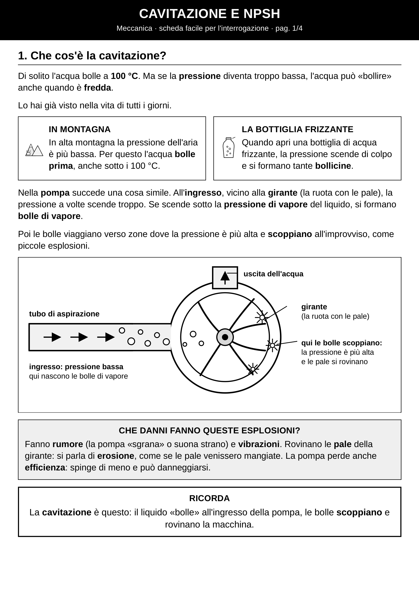
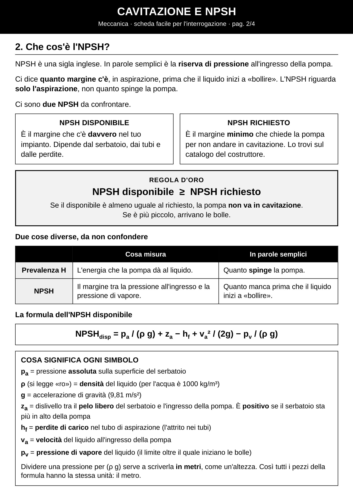
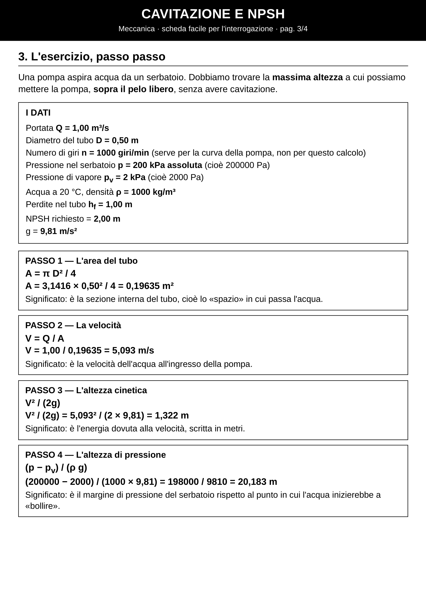
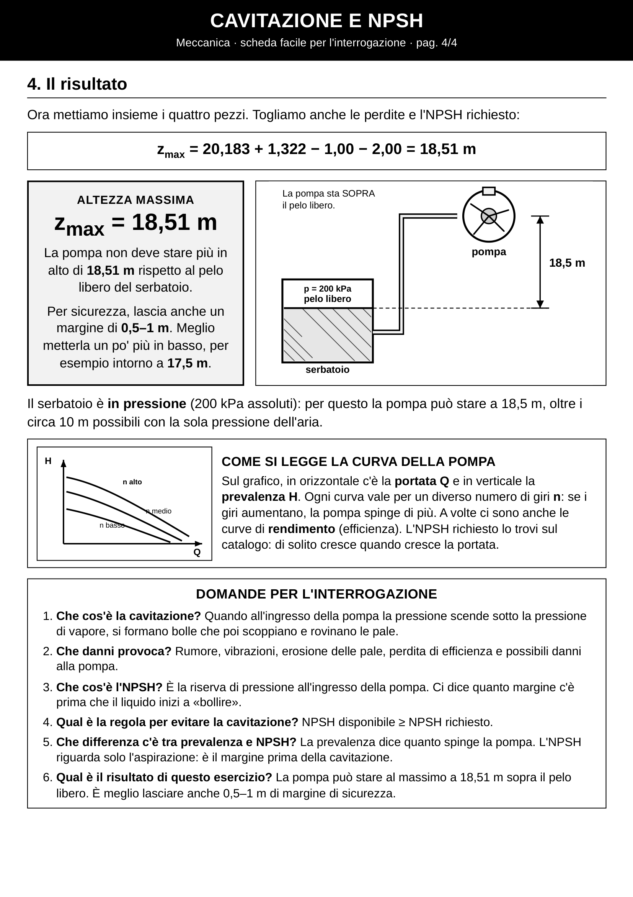

Tecnologia · Quarta professionale
Cavitazione e NPSH
«Se scende sotto la pressione di vapore, nascono le bolle.»
Guarda la video-lezione, poi ripassa con la scheda da stampare: cos’è la cavitazione, cos’è l’NPSH e un esercizio sull’altezza massima della pompa.
La video-lezione
- Cavitazione
- Danni alle pale
- NPSH disponibile / richiesto
- Regola d’oro
- Esercizio zmax
- Interrogazione
FAQ · da ripassare in fretta
Che cos’è la cavitazione?
All’ingresso della pompa la pressione scende sotto la pressione di vapore: nascono bolle di vapore. Poi le bolle scoppiano e rovinano le pale.
Che danni provoca?
Rumore (la pompa «sgrana»), vibrazioni, erosione delle pale, meno efficienza: la pompa spinge di meno.
Che cos’è l’NPSH?
È la riserva di pressione all’ingresso della pompa. Dice quanto margine c’è, in aspirazione, prima che il liquido inizi a «bollire».
Qual è la regola d’oro?
NPSH disponibile ≥ NPSH richiesto. Se il disponibile è più piccolo, arrivano le bolle.
Prevalenza e NPSH: differenza?
La prevalenza dice quanto spinge la pompa. L’NPSH riguarda solo l’aspirazione: è il margine prima della cavitazione.
Risultato dell’esercizio?
zmax = 18,51 m sopra il pelo libero. Meglio lasciare 0,5–1 m di margine (circa 17,5 m).
La scheda da stampare



